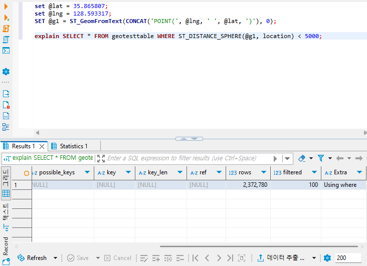
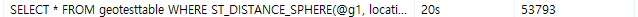
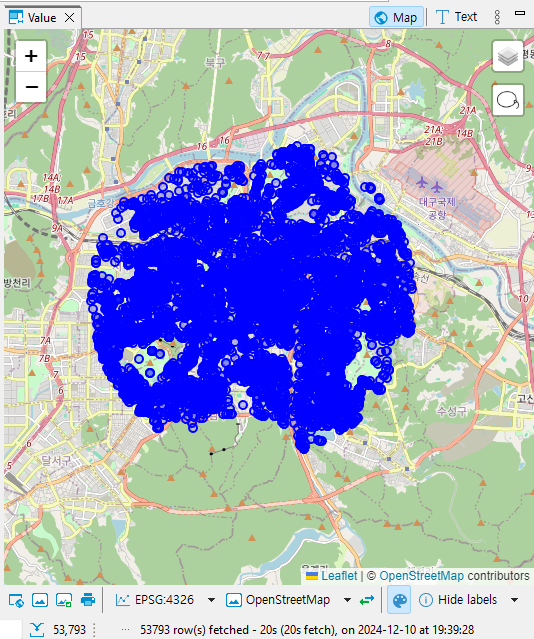
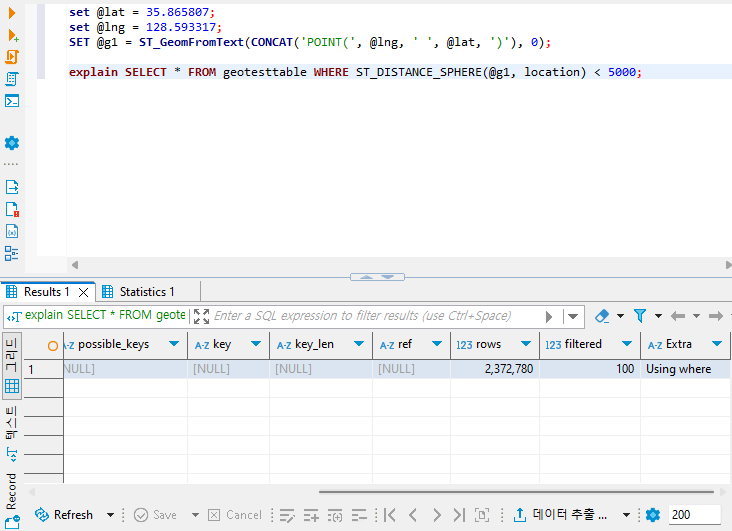
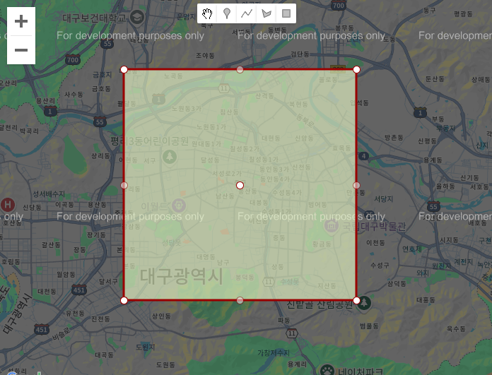
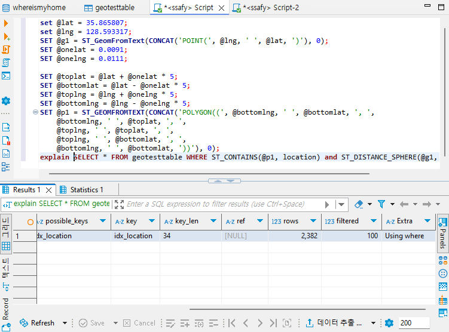
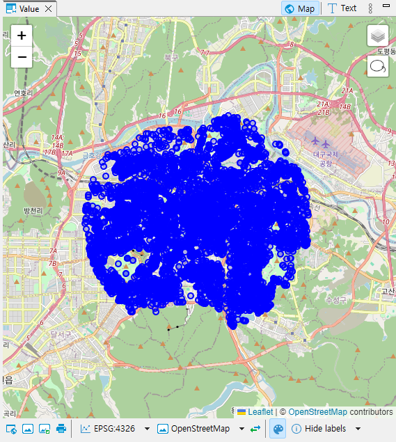

[DB] 공간 인덱스 알아보기 + 쿼리 성능 개선해보기 (w. SRS, EPSG, SRID)
서론
CS 스터디에서 12월 12일 발표 예정인 공간 인덱스에 대해 정리하고, 이를 실습해본 문서를 블로그에 공유하고자 한다.
공간 인덱스(Spatial Index)란?
공간 데이터(Spatial Data)를 지원하는 데이터베이스에서공간 쿼리(Spatial Query)를최적화하기 위해 사용되는인덱스- 기존의
인덱스는 데이터들을선형 순서로 정렬해 조회 속도를 최적화하는 반면,2차원/3차원 공간 상의 데이터들을 정렬하기 위해R-Tree와 같은 자료구조를 사용
- 기존의
공간 데이터(Spatial Data)
2차원또는3차원 공간에 위치할 수 있는공간또는지리적 참조형태의 데이터- 주로
점,선,다각형과 같은 기하학적 객체들을 말함 지리 공간 데이터,위치 기반 서비스등에 대한 표준을 개발 및 유지하는 기구인개방형 공간 정보 컨소시엄(OGC)에서는Simple Feature와 2020년 이를 대체하기 위해 발표된Feature Model등을 꾸준히 개발 중- 여러 DBMS는 이를 기반으로 한
공간 기능을 제공 중 MySQL에서도 OGC의기하 도형 모델(OpenGIS Geometry Model)에 대응되는GEOMETRY,POINT,LINESTRING등 다양한 타입을 제공
- 여러 DBMS는 이를 기반으로 한
공간 참조 시스템(SRS) #조사추가필요
POINT,LINESTRING과 같은 모든 지오메트리 객체가 존재할 수 있는 공간- 하나의 지오메트리 객체는 오직 하나의
공간 참조 시스템에만 존재할 수 있음- 이는 각
공간 참조 시스템마다 좌표가 존재할 수 있는 표면이 다를 수 있기 때문 - 예를 들어,
ASRS는구형,BSRS는평면이라고 하면 같은 좌표라도 각 SRS마다 다른 위치에 존재하게 됨 - 따라서 두 지오메트릭 객체가 동일하기 위해서는 좌표 뿐만 아니라 존재하는 SRS도 동일해야 함
- 이 때문에 보통 다른
SIRD를 갖는 지오메트리 값 간에는 어떤 연산도 이뤄지지 않고 거부됨
- 이 때문에 보통 다른
- 이는 각
- 각
SRS는 고유한공간 참조 식별자(SRID)가 존재하며, 이를 통해 어떤SRS에 속해있는지 구분함 SRID와 이에 해당하는SRS는EPSG(유럽 석유 조사 그룹)에서 제작 및 운영하고 있는EPSG의 좌표계 식별 데이터셋라는 사실상 표준이 정해져 있음- 주로 사용되는
SRS는WGS 84(World Geodetic System 1984)라고 불리는SRID 4326,WGS 84/슈도 메르카토르라고도 불리는SRID 3857가 주로 사용됨- 둘의 가장 큰 차이는
3차원 구체를 기반으로 하는지(4326),2차원 평면을 기반으로 하는지(3857)가 차이
- 둘의 가장 큰 차이는
EPSG:4326 - WGS 84#
경도(longitude),위도(latitude)를 통해3차원 타원 표면에서의 좌표를 표현하는 좌표계GPS,Google Earth등에서 사용됨각도(Degree)를단위로 함
EPSG:3857 - WGS 84 / Pseudo-Mercator / Spherical Mercator#
x,y좌표를 통해WGS 84타원체 데이텀(좌표 축의 원점이 되는 기준점)에메르카토르 투영을 적용한 좌표계메르카토르 투영의 일종이기 때문에, 고위도 지역으로 갈수록 왜곡이 심해진다는 특징이 여전히 존재
Google Maps,OpenStreeMap등 웹 지도 도구들에서 사용됨미터(metres)를 단위로 함
MySQL의 공간 데이터 타입
MySQL에는 크게단일 지오메트리 값을 저장할 수 있는 자료형과지오메트리 값의 집합을 저장할 수 있는 자료형으로 나뉨
WKB와 WKT
OpenGIS에서는기하학적 객체의 표현을 위해WKT(Well-Known Text)포맷과WKB(Well-Known Binary)포맷을 사용MySQL에서는 내부적으로 지오메트리 값을 WKT, WKB가 아닌 다른 포맷을 사용해 저장WKB와 유사하지만 앞의 4바이트가SRID를 나타냄SRID(공간 참조 식별자): 지오메트리 값이 어떤공간(공간 참조 시스템, SRS)을 기준으로 하는지 구분하는 식별자. 다른SIRD를 갖는 지오메트리 값 간에는 어떤 연산도 이뤄지지 않고 거부됨
WKT(Well-Known Text)
- 지오메트리 값을
ASCII형태로 교환하기 위해 설계됨 OpenGIS사양에서는WKT값 작성을 위한배커스-나우르문법을 제공- 자료형에 따라 필요한 점의 갯수는 다르지만 X-Y 좌표 값을
(X Y)형태로, 즉 쉼표가 아닌 공백을 통해 구분하는 문법을 공통적으로 사용함- 예시
Point-POINT(15 20)LINESTRING-LINESTRING(0 0, 10 10, 20 25, 50 60)
- 예시
- MySQL에는 WKT 형태의 문자열로부터 지오메트리 값을 만들어내는
ST_타입FromText함수들이 존재 #- 예시
POINT-ST_PointFromTextGEOMERTY-ST_GeomFromText
- 예시
WKB(Well-Known Binary)
지오메트리 WKB 정보를 담고있는BLOB형태의이진 스트림형태로 지오메트리 값을 교환하기 위해 사용됨WKB는 1바이트의unsigned Integer(byte order), 4바이트의unsigned Integer(WKB type), 8바이트의배정밀도(double precision) 숫자 값(X, Y 좌표)들을 사용byte order- 0일 경우
빅 엔디안(작은 주소에서 데이터의높은 바이트(MSB)부터 저장하는 방법)- 만약
0x12345678을 저장한다면, 앞에서 부터0x12/0x34/0x56/0x78을 저장
- 만약
- 1일 경우
리틀 엔디안(작은 주소에서 데이터의낮은 바이트(LSB)부터 저장하는 방법)- 만약
0x12345678을 저장한다면, 앞에서 부터0x78/0x56/0x34/0x12를 저장
- 만약
- 0일 경우
WKB type- 어떤 지오메트리 유형인지 나타내는 값
- MySQL의 경우 1부터 7까지 각각
Point,LineString,Polygon,MultiPoint,MultiLineString,MultiPolygon,GeometryCollection에 대응 됨
- 예시
POINT(1 -1)에 대응되는 WKB는 다음 2개의 16진수로 표현되는 21바이트 시퀀스0101000000000000000000F03F000000000000F0BF- 이는
01/01000000/000000000000F03F/000000000000F0BF로 나누어 볼 수 있음
단일 지오메트리 값 자료형
GEOMETRY는 어떤 유형의 지오메트리 값이든 저장할 수 있으며, 나머지 단일 값 유형은 특정 도형의 유형으로 값을 제한함
GEOMETRY
- 모든 지오메트리 클래스(타입)의
루트 클래스 추상 클래스(인스턴스화 할 수 없음)GEOMETRY의 하위 클래스들은GEOMETRY가 갖는 여러 속성 값들을 갖고있으며, 특정 서브클래스에는 각각 고유한 프로퍼티가 있을 수 있음- 속성 값
type- 각 지오메트리 값은 지오메트리 클래스 중
인스턴스화 가능한 클래스중 하나에 속해야 함
- 각 지오메트리 값은 지오메트리 클래스 중
SRID- 해당 지오메트리 값의
공간 참조 식별자 - 지오메트리 값과 연관된
공간 참조 시스템(SRS)을 식별 - MySQL에서 SRID는 0부터 $2^{32} -1$ 사이이며, 지정되지 않을 경우 기본값은 0
- 해당 지오메트리 값의
coordinates공간 참조 시스템상의 좌표 값으로,배정밀도(8바이트)숫자로 표현됨- 비어있지 않은 지오메트리는
적어도 한 쌍의(X, Y) 좌표가 포함되어야 함
interior,boundary,exteriorinterior는 지오메트리가 차지하는 공간,exterior는 지오메트리가 차지하지 않는 모든 공간,boundary는interior와exterior사이의 경계
MBR(최소 경계 사각형, Minimum Bounding Rectangle)- 최소 및 최대 (X, Y) 좌표로 구성된 경계 지오메트리
((MINX MINY, MAXX MINY, MAXX MAXY, MINX MAXY, MINX MINY))
simple/nonsimpleLineString,MultiPoint,MultiLineString유형은simple이거나nonsimple
closed/not closedLineString,MultiLineString유형은closed이거나,not closed
empty/nonempty- 지오메트리에 점이 하나도 존재하지 않는 경우
empty, 그렇지 않은 경우nonempty
- 지오메트리에 점이 하나도 존재하지 않는 경우
dimension-1: 비어있는 지오메트리0: 길이도, 면적도 없는 지오메트리1: 길이가 0이 아니지만, 면적은 0인 지오메트리2: 면적이 0이 아닌 지오메트리Point는0,LineString은1,Polygon은 2MultiXXX객체는 이를 이루는 요소들의 차원과 동일
POINT
- 좌표 공간에서 단일 지점을 나타내는 지오메트리
X, Y 좌표값을 가지며0차원도형으로 정의되고boundary는 비어있는 집합임
LINESTRING
- 점 사이
선형 보간(Linear Interpolation)을 사용하는Curve지오메트리선형 보간: 양 끝점의 값이 주어졌을 때, 그 사이에 위치한 값을 추정하기 위하여 선형 다항식을 사용해 계산하는 방법Curve1차원이며, 시작점과 끝점이 같으면closed- 동일한 점을 2번 지나지 않거나, 시작점과 끝점이 같은 경우
simple closed인Curve의boundary는 비어있으며,not closed인Curve의boundary는 양 끝점
- 각
점 쌍으로 구성된세그먼트의 좌표값을 가짐 - 정확히 두 점으로만 구성되면
Line,closed이며simple인 경우LinearRing임
POLYGON
다면체를 나타내는 평면형Surface- 하나의
exterior boundary와 0개 이상의interior boundary로 구성되며 각interior boundary는Polygon내부의 구멍의 경계를 정의함 Polygon의Boundary는내/외부 경계를 구성하는LinearRing객체 집합으로 구성됨Polygon은 교차하는Ring이 존재하지 않으며,Boundary의Ring이 점과 교차할 수 있지만, 접선으로만 교차interior로연결된 Point 집합을 가짐
지오메트리 값 집합 자료형
GEOMETRYCOLLECTION은 모든 유형의 객체 집합을 저장할 수 있으며, 나머지 집합 자료형은 집합 멤버를 특정 도형 유형을 가진 멤버로 제한함
MULTIPOINT
POINT로 구성된 지오메트리 집합으로, 각POINT들은 연결되거나 정렬되지 않음0차원지오메트리이며, 이를 구성하는 각 POINT 간의 좌표가 같지 않으면simpleboundary는 비어있음
MULTILINESTRING
LineString로 구성된MultiCurve컬렉션MultiCurve1차원지오메트리- 이를 이루는 모든 요소들이
simple할 때만simple boundary는mod 2 union 규칙(홀수-짝수 규칙)으로 구할 수 있음- 한
Point가 홀수 개의Curve요소의 경계에 있는 경우MultiCurve의 경계에 있다고 할 수 있음 - 모든 요소가
closed이면closed boundary는 비어있음
- 한
MULTIPOLYGON
Polygon으로 구성된MultiSurface컬렉션- 각
Polygon요소는 교차하는interior가 없어야 함 - 무한한 수의 점에 닿는
Polygon요소를 가질 수 없음 2차원지오메트리이며,boundary는 요소들의 경계들에 대응되는LineString집합MultiPolygon의 경계를 이루는 각Curve들은 각각 하나의Polygon요소의 경계에 존재해야 함
GEOMETRYCOLLECTION
- 0개 이상의
지오메트리로 이뤄진 컬렉션 GEOMETRYCOLLECTION의 모든 요소는 동일한좌표계(공간 참조 시스템)에 있어야 함
공간 인덱스(Spatial Index)
공간 인덱스와 비공간 인덱스
공간 인덱스는R-트리 인덱스를 생성하며, 이를 지원하지 않는 다른 엔진(즉,비공간 인덱스를 지원하는)의 경우,B-트리 인덱스를 생성B-트리 인덱스는정확한 값을 조회하는데는유용하지만,범위 스캔에 대해서는그렇지 않음
공간 인덱스
MySQL의스토리지 엔진중InnoDB와MyISAM에서만공간 인덱스를 지원- 일반 인덱스를 생성할 때 처럼
CREATE INDEX문을 사용하되,SPATIAL키워드를 사용- ex)
ALTER TABLE mytable ADD SPATIAL INDEX(geomcolumn);
- ex)
단일 공간 열에 대해서만 인덱스를 생성할 수 있음- 인덱스로 지정된 열은
NOT NULL이어야 함 기본 키나유니크 인덱스에는 허용되지 않음옵티마이저는SRID가 제한된 열에 정의된공간 인덱스를 사용할 수 있음
비공간 인덱스
공간 인덱스 사용하기
옵티마이저는WHERE절에서MBRContains(),MBRWithin()와 같은 함수를 사용하는 쿼리에 대해, 가용한공간 인덱스를 검색에 포함할 수 있는지 조사- 따라서
공간 인덱스를 사용하는 함수를 통해 탐색할 row의 범위를 줄이면최적화가 가능 - 예시
- 한 점으로 부터 5km 떨어진 점들 검색하기
- 약 237만개의 POINT가 기록된 테이블에서 이를 검색하고자 함
ST_DISTANCE()또는ST_DISTANCE_SPHERE()를 사용할 경우공간 인덱스를사용하지 않고, 한 점 한 점 모두 연산을 거치기 때문에 비효율적- 이 경우 쿼리는 다음과 같음
set @lat = 35.865807; set @lng = 128.593317; SET @g1 = ST_GeomFromText(CONCAT('POINT(', @lng, ' ', @lat, ')'), 0); SELECT * FROM geotesttable WHERE ST_DISTANCE_SPHERE(@g1, location) < 5000;- 위 쿼리를 분석하면,
공간 인덱스가활용되지 않고237만개의 row들을모두 불러옴을 알 수 있음- 
- 참고로
explain query문을 수행시, 실제 DB의 row 갯수와 다른 값이 불러와 질 수 있음- 이는
explain문이INFORMATION_SCHEMA테이블에서 제공하는 러프한 추정치를 사용하기 때문 - 따라서
ANALYZE TABLE table_name;문을 수행해 이를 업데이트 해주면 올바른 값을 불러옴
- 이는
- 참고로
- 해당 쿼리문을 실제로 수행하면, 데이터를 불러오는데 약
20초가 소요됨- 
- 
- 
- 이를 최적화하고자, 먼저 각 변이 한 점으로 부터 각각 5km씩 떨어진 정사각형
Polygon을 만들고,ST_CONTAINS(A, B)함수를 사용해 이에 포함되는 점들만 검색- 이를 위해 먼저 다음과 같은 형태의
Polygon을 만듦- 
- 각 변이 가운데 점으로부터 5km씩 떨어진 정사각형
- 이후
공간 인덱스를 사용하는 지오메트리 함수인ST_CONTAINS(A, B)를 사용해 각 점이 해당Polygon내부에 존재하는지 확인ST_CONTAINS(A, B)는 B가 A 내부에 포함되는지 여부를 반환하는 함수
- 이를 위해 먼저 다음과 같은 형태의
- 이후 각 점들에 대해
ST_DISTANCE_SPHERE(A, B) < 5000조건을 수행해 기준점과의 거리가 5km 이내인 점들을 불러온다 - 이를 모두 반영한 쿼리는 다음과 같다
set @lat = 35.865807; set @lng = 128.593317; SET @g1 = ST_GeomFromText(CONCAT('POINT(', @lng, ' ', @lat, ')'), 0); # 위도(latitude) 1도는 대략 111.1km # 따라서 1km당 위도는 0.0090009 ~= 0.0091도 SET @onelat = 0.0091; # 경도(longitude) 1도는 위도에 따라 달라지며, 적도에서 대략 111.1km # 계산식은 111.1 * cos(theta * pi/180) # 한국은 북위 33~38도 사이에 존재하며, 위에서 선언한 위도인 35.8658도를 기준으로하면 # 경도 1도는 대략 90.0345km # 따라서 1km당 위도는 0.0111069 ~= 0.0111도 SET @onelng = 0.0111; SET @toplat = @lat + @onelat * 5; SET @bottomlat = @lat - @onelat * 5; SET @toplng = @lng + @onelng * 5; SET @bottomlng = @lng - @onelng * 5; SET @p1 = ST_GEOMFROMTEXT(CONCAT('POLYGON((', @bottomlng, ' ', @bottomlat, ', ', @bottomlng, ' ', @toplat, ', ', @toplng, ' ', @toplat, ', ', @toplng, ' ', @bottomlat, ', ', @bottomlng, ' ', @bottomlat, '))'), 0); SELECT * FROM geotesttable WHERE ST_CONTAINS(@p1, location) and ST_DISTANCE_SPHERE(@g1, location) < 5000;- 위 쿼리를
explain문을 통해 분석하면, 설정해놓은공간 인덱스(idx_location)를 활용해 범위를 줄여 불러옴을 알 수 있음- 
- 쿼리 수행에 걸리는 시간도 20초에서 5초로 확 단축됨
- 
- 한 점으로 부터 5km 떨어진 점들 검색하기
주의사항
지오메트리 컬럼 생성시 초기 SRID를 신중히 정할 것
- 어떤 이유인지는 몰라도, 이미 존재하는 컬럼의
SRID를 변경하려고 하면 변경이 이뤄지지 않음- 시도해본 구문 목록 (예를 들기 위해 테이블 이름은
table, 컬럼 이름은geom이라고 하겠음)UPDATE table SET geom = ST_GeomFromText(ST_AsText(geom), SRID)UPDATE table SET geom = ST_Transform(geom, SRID)UPDATE table SET geom = ST_SRID(geom, SRID)
- 공통적으로 아래와 같은 오류가 발생함
ERROR 3643 (HY000): The SRID of the geometry does not match the SRID of the column 'position'. The SRID of the geometry is 0, but the SRID of the column is 4326. Consider changing the SRID of the geometry or the SRID property of the column.
- 시도해본 구문 목록 (예를 들기 위해 테이블 이름은
- 이미 존재하는 컬럼의
SRID는 바꾸는게 불가능하다 판단- 따라서 변경하고자 하는
SRID를 갖는 컬럼을 새로 생성한 뒤, 기존 컬럼의 값들을 복사해오고 공간 인덱스도 재설정함
ALTER TABLE `table` ADD geom4326 POINT SRID = 4326; UPDATE `table` SET geom4326 = ST_GeomFromText(ST_AsText(geom), 4326)` ALTER TABLE `table` DROP COLUMN geom; ... - 따라서 변경하고자 하는
참고
- Spatial database - Wikipedia
- Minimum bounding rectangle - Wikipedia
- Web Mercator projection - Wikipedia
- Introduction to Spatial Databases
- MYSQL Reference Manual
- MySQL :: MySQL 8.4 Reference Manual :: 10.3.3 SPATIAL Index Optimization
- MySQL :: MySQL 8.4 Reference Manual :: 10.8.2 EXPLAIN Output Format
- MySQL :: MySQL 8.4 Reference Manual :: 13.4 Spatial Data Types
- MySQL :: MySQL 8.4 Reference Manual :: 13.4.2 The OpenGIS Geometry Model
- MySQL :: MySQL 8.4 Reference Manual :: 13.4.3 Supported Spatial Data Formats
- MySQL :: MySQL 8.4 Reference Manual :: 13.4.8 Fetching Spatial Data
- MySQL :: MySQL 8.4 Reference Manual :: 13.4.10 Creating Spatial Indexes
- MySQL :: MySQL 8.4 Reference Manual :: 13.4.11 Using Spatial Indexes
- MySQL :: MySQL 8.4 Reference Manual :: 14.16.6 Geometry Format Conversion Functions
- MySQL :: MySQL 8.4 Reference Manual :: 14.16.9.1 Spatial Relation Functions That Use Object Shapes
- MySQL :: Spatial Reference Systems in MySQL 8.0
- How Big is a Degree? – State Cartographer’s Office – UW–Madison
- DBeaver Documentation - Working with Spatial GIS data
- mysql - Why the rows returns by “explain” is not equal to count()? - Stack Overflow
- algorithm - Calculating new longitude, latitude from old + n meters - Stack Overflow
- Wicket - Lightweight Javascript for WKT [Sandbox]
- [오픈소스GIS] WKB, WKT 이해 / postGIS에서의 변환, 입출력 : 네이버 블로그
- Features and geometry – Part 1: Feature models